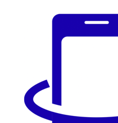
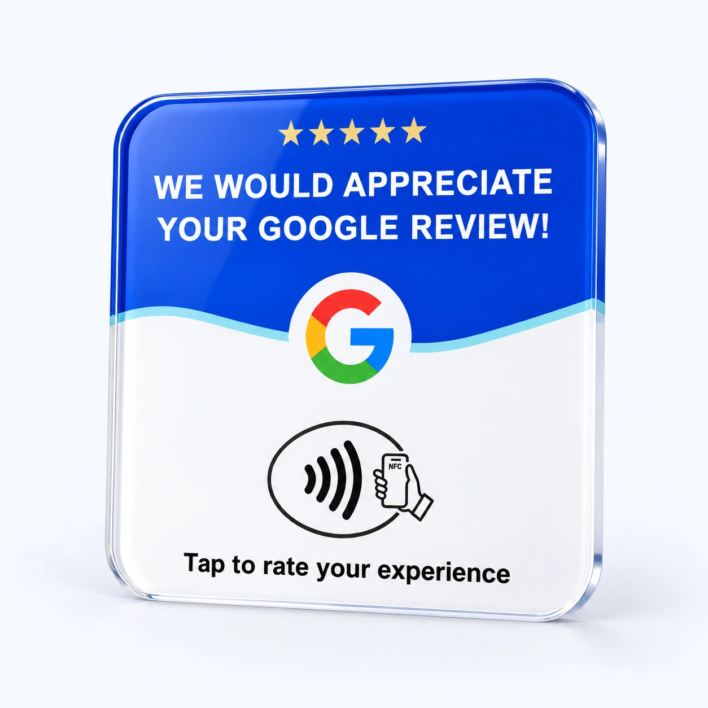

Less searching.
More sharing.
Take customers straight to your review page while the experience is fresh. No business names to type. No page to hunt down.

tap in.Find your Tap InSMALL CARD. BIG CONNECTION.
You make their day. Make it easy for them to tell the world—with a simple tap of their phone.

One simple tap.
So many possibilities.
Take customers straight to your review page while the experience is fresh. No business names to type. No page to hunt down.
Give new customers real reasons to choose you. Genuine reviews make the care you put into every visit visible online.
Make inviting feedback a natural part of checkout, a finished appointment, or a job well done. A simple tool your whole team can use.
THE TAP IN COLLECTION
On your counter. With your team.
Right where the good moments happen.
A small invitation to share a great experience.
Let your counter start the conversation.
An easy next step after a memorable visit.
A connection your team can take with them.
From an in-person visit to your online world.
Get your menu into the hands of hungry guests.
Have something else in mind? LinkedIn, Yelp profiles, bookings, your website—choose the destination that works for you.
INTERACTIVE PREVIEW
Explore where a Tap In card can take your customer. Choose a destination to preview the experience—or explore our real Instagram and LinkedIn examples.
A real tap requires a physical Tap In card. Holding your phone near this screen won’t open a link.
01 Hold a compatible phone near the card.
02 Open the link notification on the phone.
03 Review, follow, connect, or explore.
Instagram opens Tap In’s profile; LinkedIn opens owner Hayden Dewey’s profile. Both open in a new tab. Google and Menu use example screens. Nothing is posted or sent automatically.
Click Start preview to explore an example Google review experience right here.
GREAT SERVICE DESERVES TO GET FOUND
For a small business, every customer interaction is a chance to build something bigger: a reputation people can see, trust, and choose.
Put Tap In to workHonest reviews help people understand your business before their first visit. Make it easier for every customer to have a voice.
Google says more reviews and positive ratings can help local ranking. A direct review link removes a step between great service and customer feedback.
Read Google’s local ranking guidanceStart at one counter or give your team a way to invite feedback wherever they work. Keep showing up, giving great service, and making it easy to stay connected.
Local results also depend on relevance and distance. Tap In makes connecting easier; review counts, ratings, rankings, and business growth aren’t guaranteed.
BUILT AROUND REAL BUSINESS
Choose the format that fits your day.
Let a small connection become a good habit.
Help guests open your menu and invite honest feedback as they finish their visit. Keep your Instagram within reach so they can find you again.
GOOD QUESTIONS. SIMPLE ANSWERS.
The details that help you choose with confidence.
A compatible NFC-enabled phone reads the web link programmed into the card. The customer opens the link notification to reach your chosen destination. For Google, use your business’s direct review link. The customer signs in if needed, chooses their rating, and posts their own review.
It works with compatible NFC-enabled phones, including iPhone XS and later with background tag reading, and supported Android devices with NFC switched on. Phone position, settings, and cases can affect reading. Products with a printed QR code also offer a camera-based option. An internet connection is needed to open the destination.
No Tap In app is needed on phones that support reading NFC web links. The link opens through the phone’s normal browser or the destination’s app. Google requires customers to sign in to a Google Account to post a review.
Tap In takes customers to the review destination. Customers choose their own rating and what they want to say; a tap does not automatically post a review. Our slogan celebrates great service and the reviews it can earn. Invite honest feedback from all customers.
More reviews and positive ratings can help local ranking, according to Google. Tap In helps make leaving feedback easier, but does not control Google’s results. Relevance, distance, a complete Business Profile, and the quality of your service also matter. See Google’s guidance.
Yes. An NFC card can open a supported web URL, including a social profile, business listing, booking page, digital menu, or website. Choose a link and matching card setup. Following, booking, posting, and other actions still require the customer’s choice. For Yelp, use a profile link for discovery and follow Yelp’s platform guidance.
Choose a review card for a simple hand-to-hand interaction, a counter display or tabletop stand for a fixed location, and a badge for mobile teams. Instagram and menu cards support those specific destinations. Select a product to see its best uses and build your setup.
This depends on the card and how its link is configured. A changeable redirect or a writable NFC tag can allow updates; locked tags and fixed printed QR codes have limits. Include your preferred destination in your setup so the right configuration can be confirmed before you buy.
Connecting great service to 5-star reviews.